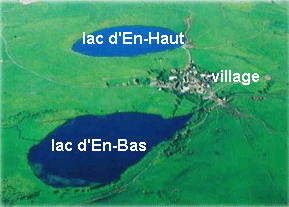

|
Perché à 1220 m d'altitude dans les
immensités hergagères du Cézallier, le
village de La Godivelle s'étage sur la pente
entre deux lacs d'origines différentes.
|

|
Le lac d'En-Haut occupe le cratère
d'un volcan du quaternaire, un "maar" résultant d'une
explosion. Alimenté pas les pluies, sans pollution,
il sert de réserve d'eau pour le village. Il est
empoissonné régulierement et sa grande
profondeur (on m'a dit près de 80 m) permet la
présence d'espèces rares comme l'omble
chevalier.
|
|
Cliquez sur les noms en blanc pour voir de
plus près.
|
Le lac d'En-Bas est logé dans
une cuvette glaciaire et cerné de dépots
morainiques. Progressivement envahi par la tourbe il abrite
une faune de marais et une flore spécifique des
régions boréales. Il a été
vidé et la diatomite a été
exploitée dans les années 50.
(diatomite = roche sédimentaire
formée d'algues fossilisées : les
diatomées)
|
 (vers le Cézallier)
Si vous êtes
entré directement : entrée du site ici
accueil ici (vers le Cézallier)
Si vous êtes
entré directement : entrée du site ici
accueil ici
|